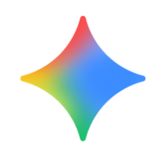

Gemini este un asistent AI de la Google, folosit pentru conversație, rezumate, explicații, idei și ajutor la sarcini de productivitate. Poate lucra cu text și, în multe versiuni, și cu imagini sau fișiere.
Numele Gemini a fost folosit de Google pentru o familie de modele AI. În 2024, serviciul cunoscut anterior ca Bard a fost reorganizat sub brandul Gemini, împreună cu variante pentru utilizare avansată și integrare în aplicații Google.
Se evidențiază prin integrarea cu ecosistemul Google, de exemplu căutare, aplicații și uneori Workspace. Este gândit ca un asistent general, cu accent pe multitasking și pe lucrul cu mai multe tipuri de informație.
Este folosit la învățare, rezumate, scriere și corectare de texte, planificare, idei pentru proiecte, plus sarcini legate de serviciile Google, în funcție de cont și setări.
Poate greși și poate oferi răspunsuri prea sigure chiar când informația nu este corectă. Când lucrezi cu date personale sau cu documente importante, verifică ce permisiuni ai activat și ce informații sunt trimise către serviciu.